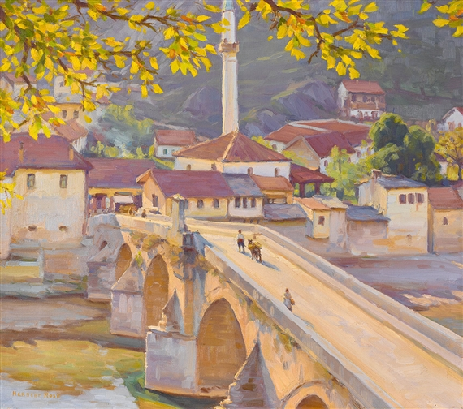

Prose
The Fox Prince

It was mid-May, still spring by the calendar, but by the weather, nearly high summer. Under a glaring afternoon sun, the low khaki hills surrounding the bay cut a sharp outline against the cloudless blue sky. On a sheet of ultramarine water sat a red-painted motorboat, a rope curving between its bows and the weathered wooden pier. The day was so still and the water so glassy that the boat was mirrored by another below it, their two red hulls joined at the waterline. The sunshine lay like a sleeping cat across the pier’s grey planks. A few gulls curved slowly above on rigid wings; others stood in a row along its rail, occasionally shuffling their flat orange feet.
The boat’s mast, carrying a tightly furled sail, made a white cross against the azure sky. An efficient-looking engine tucked under a metal cowling at the stern suggested the sail was not often used. But it would be pleasant, thought Aleksandar Radić, once you got out on the open sea, to shut off the motor, and sail around the islands the old way, in silence but for the creak of blocks, wind bellying in canvas.
Radić was waiting for the ferry. Leaning on the stone harbour wall, he felt the sun’s heat through his jacket, and a trickle of sweat ran under his collar. At his feet were a suitcase and an olive-green army duffel bag. He stood over the duffel protectively, because inside, wrapped in a silk scarf and then a woollen sweater, was something precious; a small portrait in oils in a carved wooden frame.
He had rescued the portrait from his childhood home in Prizren. The house and its garden had been in the family for generations, passed on unhurriedly from father to son. But the line of possession had been severed when Prizren fell into the hands of foreigners. Many local people had been driven out, some killed. Churches had been burned, shops looted, homes destroyed. His elderly parents, fearful and bewildered, had fled, abandoning everything they could not carry, to Niš. There, knowing no-one and having nothing to do, they died within a month of each other.
The property had devolved on Radić, so he drove the two hundred kilometres from Niš to Prizren straight after his mother’s funeral, telling himself he was wasting his time. The place had surely been destroyed by now.
However, he found it standing, not even looted, perhaps because it was some way from the town centre, and half-hidden by lichen-tufted fig trees and scrappy grapevines. But the little dwelling was a meaningless inheritance; nobody would buy it now, and he could never live in Prizren again. So he took the one thing of value to him, the picture of his grandmother Mara, and, locking the doors, left the house for good. If they burned it down, they burned it down. There was nothing he could do to stop them.
The little portrait had always hung on the white plaster wall of Grandmother Mara’s bedroom. It had been made by the village painter when she was sixteen, she had told him, and sent to Prizren for the matchmaker to arrange a marriage. Three weeks later, the message came that she had been accepted by the Radić family, and her parents packed her trousseau in a trunk and despatched her to the city by cart. The young girl saw her husband, Aleksandar Radić’s grandfather, for the first time on their wedding day.
His grandfather had actually agreed to marry the portrait, as the boy Aleksandar understood the story, and so to him it was imbued with a life of its own. Painted in the naïve style, it showed in full face a girl with narrow lips, red cheeks, and thick black hair twisted into a coil beneath a starched lace headdress. The elaborate scarlet embroidery on her white blouse was picked out in careful detail. But the most remarkable thing about the portrait was the eyes. The village painter had caught his grandmother’s eyes exactly as Radić remembered them; an icy pale blue, with small black pupils, like a wolf’s eyes. Such eyes had never been seen in Prizren; eyes from another world, people said.
This marriage produced Radić’s father, who became a baker, married, and in turn had children, so the girl from the village became Grandmother Mara. After she was widowed, she came to live in the Radić household, a small, upright, dark-browed woman who wore a full black skirt, linen blouse and headscarf, carried a polished mahogany walking stick, and drank one glass of slivovitz every evening after dinner.
Radić’s parents, preoccupied with work and money, speaking seldom to each other and usually bitterly when they did, had little time for him. He spent the evenings in his grandmother’s company. To entertain him, she told him tales from the village, tales she had been told herself as a child; stories of princesses and tree-spirits and hobgoblins, of foxes who took human shape, of singing fish, of wise fools making their way in the world by the guidance of God. Young Aleksandar Radić came to know all these by heart, but still loved to hear them, pleading to be told again about the three wonderful beggars, or the prince and the dragon, or the Emperor and the goat ears.
On some evenings his grandmother laid out her cards. The worn pasteboard rectangles, with their colourful pictures and symbols, fascinated Aleksandar, but he knew not to touch them; they embodied some kind of magic. Sometimes women visited, speaking hesitantly and shyly, to ask Grandmother Mara what the cards foretold. These ceremonies were performed in her room, with the door firmly shut, so he never saw how the cards conveyed their message. But he imagined them arranging themselves into patterns, or even whispering in tiny voices.
People sometimes spoke carelessly in front of the boy, and young Aleksandar overheard the neighbours’ talk; Grandmother Mara had been asked to visit a home where the wife was unable to conceive, another where there was constant illness. When the neighbour women spoke of her, they called her veštica, the witch, crossing themselves.
When Aleksandar Radić left home for the capital, aged seventeen, his grandmother was clear-eyed and active. When he next returned to Prizren, at twenty-three, he could do no more than visit her grave. Standing beside it, trying to say a prayer for her, he felt a pillar of his life had been dislodged.
In the years he had been away, Radić had not become a lawyer as he had planned. Instead, by the interweaving of chances taken and opportunities missed that determines most human fates, he became a journalist, working for the Daily Telegraph newspaper. His work was busy general reporting, done to daily deadlines, leaving him little time for any other writing. Nevertheless, he had not forgotten his grandmother’s stories. After her death, he decided he owed it to her to record her tales, and he began to write them down in such spare time as he had.
Over almost ten years – during which he married, fathered a son, and was divorced; lived for twelve months in Nový Sad, drank heavily, stopped drinking altogether, and started to drink again, all the time working on newspapers – Radić set down his grandmother’s stories. He added to some, to fill gaps in his memory, and shaped one or two others to make their point sharper, but essentially he preserved Grandmother Mara’s tales as she had told them to him.
Under the title The Fox Prince, they were published by a small local press. Radić put up the capital himself, expecting to lose money on the book. But he was content; he had repaid a debt to his grandmother, given her stories a home, and perhaps now he could clear some room in his memory.
Events, however, fell out otherwise. Appearing, quite by chance, at a time when his country was searching for reminders of its roots, and seized on by the new government as an exemplar of the nation’s culture, The Fox Prince became a statement of patriotism, read in many homes, and even prescribed in schools. With this one small book Radić become far more widely known, and earned far more money, than he had in fifteen years as a journalist.
He was at first embarrassed to be named a champion of the national heritage, and other such titles, and initially refused the public honours he was offered. He had recorded the stories out of a private obligation, and understood he was being used for political gain by people who cared nothing for the book itself. He recalled his one meeting with the President, the man’s unfocussed gaze, the brandy on his breath, the minders moving him along after a few sentences.
However, he received so many letters of gratitude from ordinary people – parents, grandparents, children – that he was persuaded to accept the acclaim, not for himself, as he said in his speech on the occasion, but for Grandmother Mara. Then he resumed his work as a journalist; he had no more of his grandmother’s tales to tell.
But to his surprise, and then alarm, pressure came to bear on him, in the national press, from the Church, and ultimately from the government, to write another book lauding the nation’s culture and traditions. Having accepted recognition and honours as the voice of the nation, it was put to him bluntly, he was bound to continue speaking in that voice, especially at this time, with his country under attack and in its hour of need.
So now he was standing on this quay in the spring sunshine, waiting for a boat to take him out to Saint Sava island. If he had to write another book, at least out there, away from the capital, from his friends, from his ex-wife’s drunken phone calls, he could work without interruption.
The uneasy apprehension that he had no idea what to write surfaced again. Everything he knew about the nation’s culture and traditions was in the stories he’d learned from Grandmother Mara. Another such book seemed impossible. He clung to the idea that his grandmother would come to his aid, bring hm inspiration, once he was able to commune with her portrait in seclusion.
His thoughts were interrupted by gulls starting up from the jetty in a flurry of wings, their cries echoing round the inlet. A ship was nosing into the bay, a twenty-metre cabin cruiser trailing diesel smoke, with orange rust streaking its flank; the ferry to Saint Sava.
Radić had rented a cottage on Saint Sava for six months. He had been attracted to the little island since he first visited it, many years before. Low and sandy, covered with stands of pine and clumps of flowering shrubs, it was populated more by sheep and goats than humans. There was a small shop at its southern end where tobacco and flour and wine and oil could be bought. The local inhabitants sold vegetables and eggs at the front gates of their houses, and the mail boat came once a week bringing supplies. He would have solitude and quiet; it was the ideal place for writing.
The boat surged up to the pier, waves slopping against the harbour wall. A wooden gangway was lowered. The arriving passengers hurried ashore, then those waiting on the quay, several shouldering bulky chequered plastic bags, clambered up. Radić stood back to allow a woman carrying a baby to go ahead, and found himself the last to board as people followed close on her heels, anxious to find seats. Once on deck, he stood at the rail looking back at the cove. A man in faded blue overalls unshipped the rope from its bollard and, in a single practised movement, coiled it and tossed it aboard. The engines rumbled, there was a cloud of oily smoke, and the water at the ferry’s stern churned as it prepared to draw away.
Just as he was giving himself up to the pleasure of an hour’s journey on the Adriatic, Radić noticed a commotion on the shore. Shielding his eyes against the glare, he saw a woman seemingly arguing with a group of people. She broke free of them and ran across the grey sand towards the jetty, screaming at the boat, ‘Chekai me! Wait for me!’ A long green wrap-around skirt flapped as she ran, and big gold-rimmed sunglasses flashed in the sun.
The ferry paused. There was some muttering, an order, the engines growled as they changed gear, the gangplank was lowered again, and the woman climbed up. ‘Sons of bitches, trying to leave without me when I had a ticket,’ she said to nobody in particular. She pushed into a space next to Radić at the rail, unslung her big cloth bag from her shoulder and dumped it on the deck between them, shoving it against his leg so he was forced to move to make room for her. The vessel drew away from the pier, and headed towards the mouth of the bay.
Radić could not help looking sidewise at the woman standing so close to him. Tall and suntanned, at least in her mid-thirties, her long dark hair was woven into a thick untidy plait. A necklace of big orange beads hung down over a loose peasant blouse. She smelled of patchouli oil and sweat. Some sort of bohemian, he decided; precisely the sort of person who would arrive late for a boat, make a disturbance, inconvenience people. His gaze must have been obvious, because abruptly the woman raised her large sunglasses and turned to look him full in the face.
‘Well?’ she said sharply. ‘How long are you going to stare at me, jerk?’ Her voice was low-pitched and harsh, and her breath smelt of cigarettes. Radić raised a hand in apology, but he was not able to stop staring; her eyes were icy pale blue, with dark outer rings and concentrated pupils, exactly as he remembered his grandmother’s eyes. He could not take his gaze away from them.
‘Pfu. No manners at all,’ she snorted, lowering her glasses again and looking away pointedly.
Disconcerted, embarrassed to appear mannerless, Radić blurted out what was at the front of his mind.
‘I’m sorry, but you remind me so much of my grandmother,’ he said.
She turned to him again. ‘Oh, really. That line will bring you a lot of success. Exactly what every woman wants to hear, she looks like a grandmother. Are you trying to insult me?’
‘No,’ said Radić, holding up one hand defensively in apology, ‘no, I wasn’t being rude. My grandmother was special, she was …’ he stopped, not wanting to use the word witch. ‘She had second sight. And it’s just that your eyes are exactly the same as hers.’ He paused. ‘Wait, I have her picture here.’
Radić had not intended to unpack the precious portrait until he was safely in his new home, but now he felt an odd compulsion to show it to this woman. He had certainly hoped for help from his grandmother. Was the appearance of these eyes, identical to hers, a sign to him? Feeling somewhat foolish, he nevertheless knelt beside the duffel and extracted the bundle, carefully unwrapping the little painting. The woman glanced down, then bent to look more closely.
‘Please, might I see it?’ she asked, in an entirely different tone. She reached out gently, with both hands, as if to hold an icon. Radić, unwilling to release the picture, simply held it up close to her face. She stared at it, her brows drawing together. After a full minute, she spoke.
‘Did your grandmother tell you what this embroidery on her bodice means?’ Radić shook his head.
‘Well, it shows her village, of course. The next row means she was born on midwinter’s day. And then here’ – she pointed carefully – ‘it says she is descended from a long line of witches. It’s all written in the stitching, if you know how to read it. Don’t worry,’ she added, smiling sardonically, ‘the witch blood goes down the woman’s side. You haven’t got it.’ Radić began to wrap the portrait again. Distractedly, he wondered if his grandfather knew the girl he was marrying was a witch.
Now the woman stared at him in turn.
‘Why are you coming to Saint Sava?’
And although he had no reason to tell her anything, he explained he was going to live on the island and write a book, because he had written The Fox Prince.
‘Ah, it’s you who wrote that? You’ve misunderstood some of those stories, you know. But where did you hear them – from this grandmother?’
He nodded.
‘And now you want to write another book like it.’
She shook her head, and, grasping the rail with both hands, looked down over the side. The water was green now, and raced past them in white-topped wavelets. Gulls swooped in their wake. Radić noticed a blue shape on the horizon; the bow swung towards it, and he realised it was their destination. The woman spoke again, but softly this time, so he had to lean forward to hear her over the sound of the engine and the screaming gulls.
‘Listen to me, carefully. You have a problem, and I am required to help you. Get this right; it is not about you personally. I don’t like the look of you and I would rather not have met you. I wish I hadn’t seen that portrait. But now, I have no choice. I owe it to your grandmother.’ She sighed. ‘If you think I am lying, please tell me you don’t want my help. I will be very glad, because that will free me from my obligation.’
Radić hesitated. This was all too quick for him. His instinct was to avoid this woman, but he certainly had a problem; he had to write a book, and he had no idea how to write it. How she might help him with that he didn’t know, but this much was clear; she reminded him very distinctly of Grandmother Mara.
‘Very well, I accept,’ he said, feeling he was plunging into a deep pool. She looked away, out towards the island, before she spoke again.
‘So, will you tell me where you are staying?’ Radić described the cottage.
‘Ah, the Bajramović place, I know it.’ She glanced at him and nodded, resignedly. ‘All right. I will come to your house tomorrow, at midday. We will speak then.’ She turned to again look out over the sea.
The blue shape had resolved into a low grey-green island. The cruiser chugged into the small cove, and tied up at a rickety wooden jetty like the one they had left. Radić waited until all the other passengers had disembarked, but the woman was waiting for him on the quay, her eyes invisible again behind her sunglasses.
‘So, at midday tomorrow,’ she said. Radić nodded. She turned and strode off, lopingly.
Watching her walk away, Radić felt he was being released from a spell. How had he come to show his grandmother’s portrait to a complete stranger, and someone so unlikeable at that? He could still smell her sickly patchouli oil. Now this woman knew where he lived, had invited herself to visit him, and he had agreed. What had he been thinking of? Well, she had deciphered the portrait, or so she said, and she recognised Grandmother Mara was a witch, which he didn’t tell her. But really, it was her eyes; he’d never seen another person with exactly his grandmother’s eyes, those eyes from another world, as they’d said in Prizren.
Oh yes, and what if she is after money, or simply crazy? Probably she knew all along who you were. Your face is on television, after all. Why do you think she pushed in next to you on the ferryboat? If it had been a man, you’d have kept your mouth shut, but because it was a woman, you told her everything, even where you live. And she didn’t even tell you her name. You deserve to get shaken down. You’re as big a fool as you always were.
Radić shook his head. If this woman tried to give him difficulty, he would simply drive her away. Anyway, what was done was done; he couldn’t change it now. Feeling uneasy at what had happened, wondering again if he could have avoided it, he balanced the weight of his bags and set off to walk to the cottage.
The winding sandy path was lined by wild olive trees. Heated by the late afternoon sun, their grey leaves gave off a bitter, invigorating fragrance. Small birds flittered between their knotted branches. There was no breath of wind, and his shirt was sticking to his back when he reached his destination.
The small stone house, some distance from its nearest neighbour and backing into a grove of low pines, was reassuringly solid. Scalloped terracotta tiles covered the roof. A grape arbour threw a patch of mottled shade. Inside it was cool, smelling faintly of basil, and appeared freshly swept. Once he had unpacked, placing his handful of books on a plank shelf and his clothes in a creaking wooden wardrobe, he hung his grandmother’s portrait on a nail in the whitewashed plaster wall. Then he sat on the low bench outside the front door to watch the day come to its end, just as, he was sure, the people here had done for generations.
The sun set with very little ceremony. It hung low in the west for a time, then slid below the tops of the pines and disappeared. The blue sky scarcely changed at first; only its eastern rim shaded purple. Slowly it became paler overhead, almost white, then gradually darker and darker. A star gleamed faintly in the west. Frogs began croaking somewhere nearby; it was night. A mosquito whined next to his ear. Slapping at it, Radić turned back into the house.
Later, he lay awake listening to a soughing sound, which he first thought was the ocean but concluded was the wind in the pines, before falling into a deep sleep.
As soon as Radić woke the next morning, he remembered that the bohemian woman was coming to the house. Again he berated himself for having told her where he lived, for having spoken to her at all. The thought of her visit spoiled the prospect of the spring day.
After breakfast he found his way to the shop, a shack with a pair of large brindle dogs dozing in the shade of its canvas awning, and bought goats’ cheese, olives, black bread and two plastic bottles of local red wine. He walked back slowly under the blue sky, the warm morning air full of the tart fragrance of wildflowers and the hum of insects. He wished he were free of the book he had promised to write, free of responsibility, free of everything. A man could be happy here, living on this island with no obligations whatsoever. Once home, he frittered away the rest of the morning, telling himself he could settle down to work once the woman’s visit was out of the way.
Midday came and went, and she did not appear. By one o’clock he decided she wasn’t coming. Yet he could not bring himself to leave the house, and explore the island as he had intended. Go, he told himself, you don’t want to see her anyway, and now she is late you have every excuse to avoid her. But that meant throwing away the chance to speak with someone who might connect him with Grandmother Mara, just when he needed that connection. No doubt there was a reason she was delayed. Wavering between these positions, he spent the afternoon wandering about aimlessly, never far from the house.
Just on evening, as he was standing near the front door, his eye caught something moving on the edge of the cleared area, a reddish shape. A fox. Well, foxes are everywhere in this country. The animal stood on the edge of the treeline, seeming to watch him, for some time, then vanished into the undergrowth.
By nightfall Radić’s mood was sour. He’d wasted the whole day worrying about this woman’s visit, and she hadn’t come after all. Obviously she was a charlatan, or simply unbalanced. He ought to have trusted his first impression of her.
He lit the brass kerosene lamp on the circular wooden table, turning the wick down to give a soft yellow light, and stepped over to the stove to make tea. As he reached for the kettle he heard a cough at the door. The woman stood there. Startled, he stopped, one hand on the kettle, looking at her over his shoulder.
‘I apologise,’ she said from the doorway. ‘I said midday, but it was not propitious to come then.’
He did not recognise her as the bohemian from the ferry. She appeared altogether different, wearing now a long-sleeved black linen dress reaching to her feet and a dark headscarf, her face clean of makeup. Like an abbess, it struck him. Her severe, chaste appearance dissipated his annoyance, and made him slightly ashamed of thinking of her as an adventuress. She remained standing at the doorway, until he realised he had not invited her in. Embarrassed, he did so, and she entered silently, loosening her scarf.
‘Would you like something to eat or drink?’ he offered. ‘There’s olives and cheese and bread. I have wine, or I can make tea.’
‘Just a cup of tea, thank you.’ Without even glancing around the room, she sat at the table, and produced from a cloth bag a small, neatly-wrapped bundle, which she unfolded to reveal a pack of cards.
‘Please, come, sit down,’ she said. ‘You must be present for this.’
Radić sat opposite her. The lamp cast a glow over the table, almost reaching the far corners of the room. The house was silent; he heard the faint click of each card as it was set down. The scene so strongly evoked his childhood that he could not help glancing up at the portrait. Just visible on the edge of the lamplight, his grandmother looked down at the table, as if she were reading the cards over the woman’s shoulder.
She had laid the cards out in a cross pattern, which she studied for some time. Then she gathered them up and asked him to place his hand on the pack. He did so. She laid them out again, first in one pattern, then another. Her fingers were unusually long, Radić noticed. He did not like to look at the cards too closely, in case it might interfere with their workings.
She sat motionless over the last arrangement, staring down at it without expression. The lamp on her right lit her face in profile, marking out her straight nose and high cheekbone.
She collected the cards together a second time, wrapped them in their cloth, and put them away in her bag. Then she let out a deep breath, and looked up at Radić. Even in the lamplight, her ice-blue eyes shone, as if lit from within. He felt he was back in his grandmother’s presence.
‘I don’t have access to everything your grandmother Mara knew. She was much more powerful than I,’ she began. She spoke in an even, toneless voice, entirely unlike her manner on the ferry.
‘You will not return to your home.’ Well, I knew that, he thought, she must mean Prizren, and everybody knows we can’t go back there, any of us.
‘It is a pity you lost your sister.’ Now Radić was startled. This was his family’s secret; his elder sister had died in infancy, he’d been told, and was never to be spoken of.
‘She inherited your grandmother’s powers, but the line was broken with her death. That has left you…exposed.’ Radić sat silent, waiting to hear what else might emerge.
‘As to the matter you are most concerned about, there will be no second book, and even if you do write something here, it will not be read.’
She looked around the room for the first time, and Radić realised he had not made the tea he’d promised. He began to rise, but she gestured him to remain still.
‘Your grandmother wishes to tell you she will do her best to protect you.’ She folded her hands in her lap, and bowed her head.
‘You are in contact with my grandmother?’
‘I have received a message from her, it would be better to say.’
‘And is that all?’
‘That is all I am allowed to tell you.’
Radić felt a renewed flicker of scepticism. ‘Forgive me, but this is rather vague. Is there something more specific you can say about the future?’
She shrugged. ‘I am not an oracle. I have told you what the cards told me. Unless I am instructed there is something else I must do, I have carried out my obligation to your grandmother.’
‘Do I owe you something for this?’ he asked, still half-wondering if there might be some trickery involved.
‘Certainly not. I will go now. I hope we do not have to meet again.’
She rose, seeming even taller than he had first thought, and tied her scarf over her head.
‘Good night.’
Radić felt very ungallant. ‘It’s dark; can I see you home?’
‘No, thank you. I know this island, even at night. Especially at night.’
She left, without saying more. It struck Radić that he hadn’t told her his grandmother’s name. Ah, it’s in the dedication to the book, he remembered.
Radić turned over what the woman had said as he cut himself some bread and cheese and drank a glass of tea. Her gravity had impressed him, and she had by some means known about his sister, but how could there really be a message from his grandmother? And yet… After a time, he went outside, and stood looking up at the night sky. There was no moon, and only a few indistinct stars. An owl hooted from a nearby pine. In that moment he felt very much alone.
Over the next few days Radić wandered all over Saint Sava. He explored the tracks winding through the wild olive groves, and stood on the low headlands overlooking the narrow stony beaches. He paused before the small shrine with the saint’s weather-worn statue, to which faint traces of polychrome still clung. The hot sunshine was threaded with the clank of goats’ bells. He met few people, and did not see the woman again. Each evening foxes appeared around the cottage, always just on the edge of the trees. Once he shone a torch at one; he saw a reflection of its eyes, bright green, before it disappeared.
After a week, he forced himself to sit down and write. He had felt blocked by the woman’s pronouncement that nobody would read what he wrote, but decided he was using it as an excuse to avoid an unwelcome task.
There was no purpose in trying to invent more fables; that was beyond his powers. He grasped at the idea that he might set down an account of Grandmother Mara’s life. That would say something about our heritage, he thought, and I could include some of her sayings.
The writing, however, proved slow, and Radić was dissatisfied with much of it, crossing out and emending each page laboriously. He made little progress, feeling he was not in touch with his grandmother at all, despite often staring long at her portrait. He still spent much of each day tramping around the island, or wandering from room to room in the house. He took pleasure in the bars of afternoon sunlight sliding across the walls and floor, touching the old, hand-made wooden furniture. Radić tried to imagine the lives of the men who had fashioned these pieces, plain and functional, but each with its own individual character.
The June days became even hotter, and at night Radić slept either under a single sheet, or without any covering at all. And almost every evening, as he sat outside the front door, he saw foxes flitting around the house.
One morning, just after sunrise but already very warm, Radić decided to go for a swim. It would be a good start to the day, to immerse himself in the blue water of the Adriatic. Carrying a towel, he walked towards the nearest beach. A stony path led down from the hill to the water’s edge, where wavelets lapped at the grey pebbles. As he stepped onto the path, a fox emerged from the undergrowth and stood barring his progress. Curious, he thought, I’ve not seen one in daytime the whole time I’ve been here. He stopped. The fox looked at him and bared its teeth. He moved to walk around it. It barked at him, three short yaps.
Radić thought of picking up a stone to drive the animal away, but hesitated. He had come to feel some affection for the foxes he had seen almost every night here. He retreated a couple of paces; the fox sat, looking at him, its tongue lolling. Once more he stepped onto the path. The fox barked again, but as he walked towards it, retreated, growling in its throat. As he passed, it dashed away into the olive trees, giving a strange shrill cry as it disappeared.
He continued down the path to the beach. He tossed his towel onto the stones, kicked off his sandals and walked into the blue water. The early morning sun glittered on the low swell.
The sea was warm, almost tepid, and Radić struck out, searching for a cooler part. His nostrils were filled with the smell of brine. The water seemed to welcome him, and he swam out further, until finally he stopped, and lay floating on his back, absorbing the warmth of the day. He was level with the headland, he saw, maybe even past it. He closed his eyes, and saw sparkles of red as the sunlight glowed through his eyelids.
Just then he felt a current of colder water, much colder, surge around him, and he turned to swim back towards the shore. But he seemed to be making no headway. He struck out more energetically, but felt the current tugging at his body, dragging him backwards.
Now concerned, he put all his effort into getting back to the beach. Still it seemed he was being drawn further from it. The swell was stronger, the water seemed somehow heavier, and he felt his strength being overtaken by its weight. For a moment his head went under, and he saw only green; then he surfaced again, drawing in deep ragged breaths. He was definitely being pulled further out, and the muscles in his arms and shoulders were burning; it was a long time since he had swum seriously. The sun’s rays speared into his eyes as he came up a second time. He was swallowing water. The shore seemed a very long way away.
On the headland, a fox stood outlined against the blue sky, its brush raised like a flag.
The day after Aleksandar Radić’s funeral, old Nana Rosić came to the cottage to clean it. Actually, there was not much to clear out; food, some clothes and a few books. The gentleman had lived very neatly. On the table lay a few loose sheets of paper with writing on them. Well, he was dead now, surely they couldn’t matter. She scooped them into the rubbish.
As she left, carrying her straw broom and the bag of rubbish, she noticed a fox watching her from the treeline. Not so often you see them during the day, she thought.
Peter Newall has worked as a dockyard labourer, a lawyer and a musician. He has lived in England, Australia, Japan, and now in Odesa, Ukraine, where he leads a local blues band. He has been published in Britain, the USA, Canada, Europe, South America and Australia.